Viajes compartidos es una página web destinada a aquellas personas que habitualmente por necesidad o placer realizan distintos viajes a lo largo y ancho de la República Argentina. Mediante este sistema, dichas personas pueden acordar compartir un viaje para así obtener una disminución de gastos y a la vez tener la posibilidad de obtener beneficios con descuentos en ciertas marcas.
Estando registrado en el sistema se permite, mediante la página principal, la búsqueda de viajes que sean de interés, así como la creación de los mismos.
Una vez que un cliente desea participar en un viaje, el sistema le proveerá información de contacto y una sección de comentarios, para que ambas partes coordinen su viaje en común.
Se contará con un sección para el administrador, con el siguiente contenido.
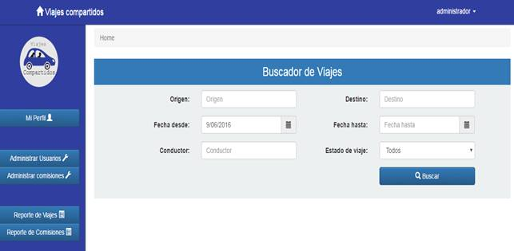
El administrador contará con una solapa “Mi perfil” para ver su información personal.
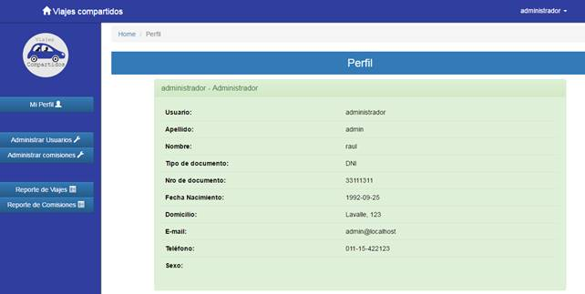
Presionando en “Administración Usuarios”, se podrá gestionar tanto los roles como los permisos de los usuarios creados.
En “personas” se observan las personas vinculadas a los usuarios creados en el sistema. Se cuenta también con un buscador para las mismas.
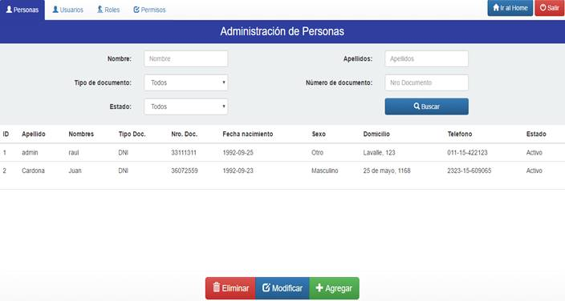
Seleccionando una persona de la lista se los podrá eliminar y modificar.
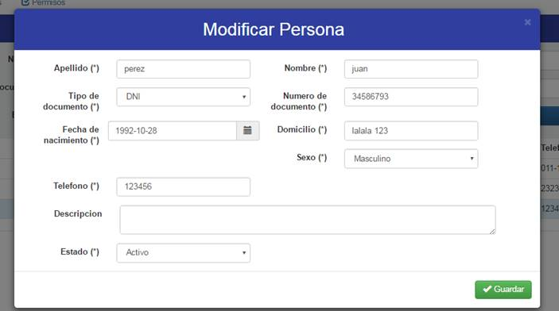
También se cuenta con la opción de agregar un nueva persona, presionando en “Agregar”.
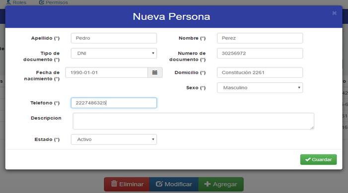
En “Usuarios” se observa información de los usuarios registrados en el sistema.
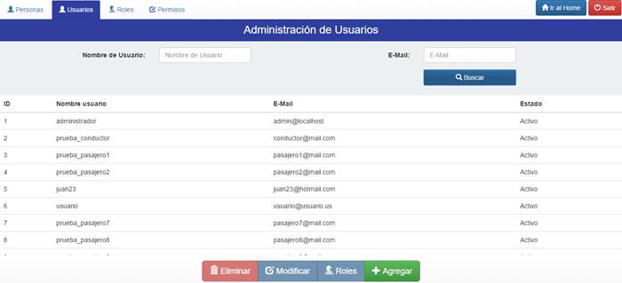
Seleccionando un usuario de la lista se los podrá eliminar y modificar.
Seleccionando la opción “Modificar” del usuario aparecerá la siguiente pantalla, en la cual podrá modificar los datos.
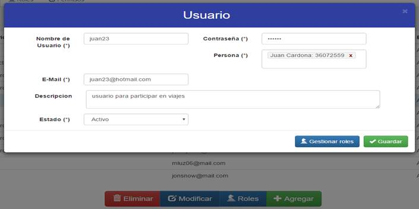
En roles se podrá asignar o desasignar roles a dicho usuario.
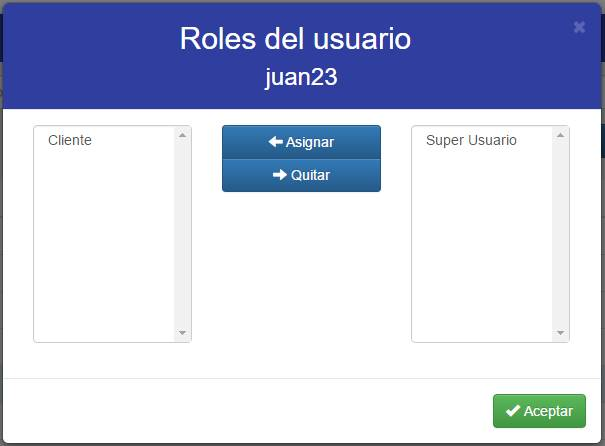
Para agregar un nuevo usuario presionamos en “Agregar” y se completan los campos requeridos
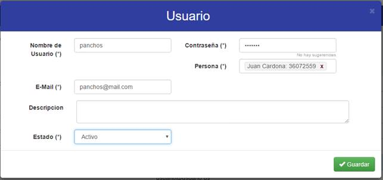
En la sección roles aparecerán los roles que tiene definido el sistema.
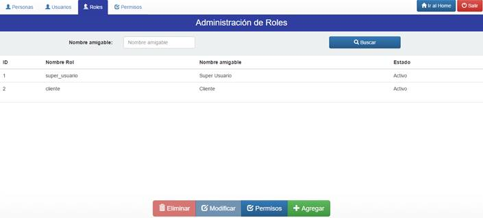
Clickeando en uno de ellos se podrá eliminar y modificar.
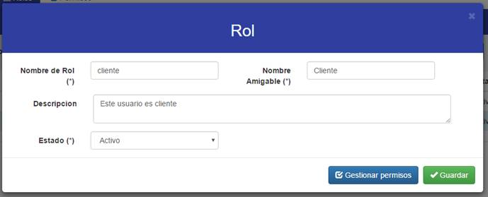
En la sección roles se podrá observar los permisos de dichos roles, así como también agregarlos y quitarlos.
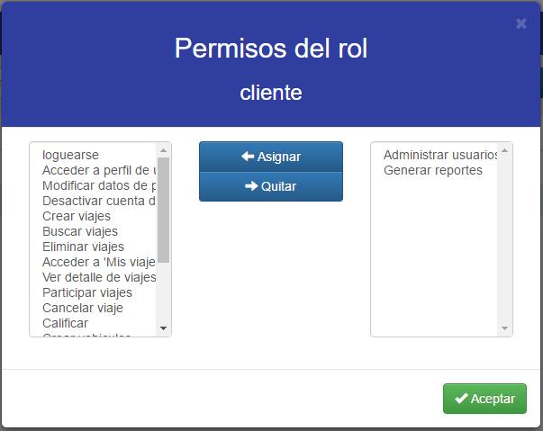
A su vez se cuenta con el botón “agregar”, que permite definir nuevos roles.
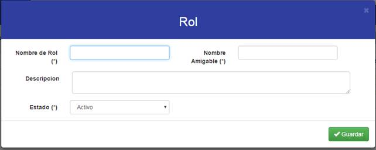
En esta sección se describen los permisos asociados a los roles de los usuarios.
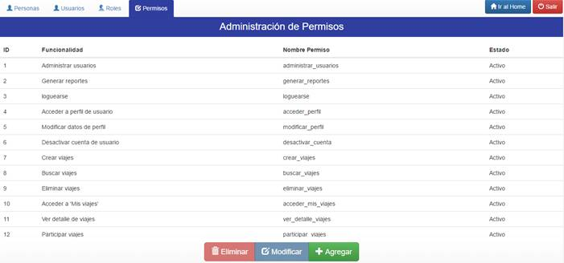
Se podrá agregar permisos.
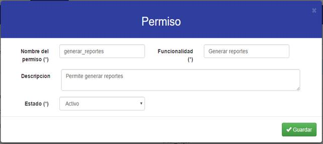
Como también eliminar y modificar.
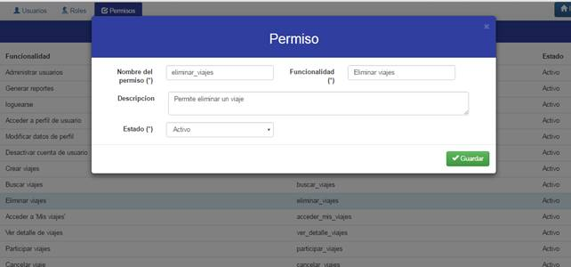
En esta sección el usuario administrador podrá visualizar una lista con los precios de las comisiones que él fija, teniendo en cuenta un rango de kilometrajes.
A su vez se pueden agregar más comisiones o eliminar/modificar las existentes.
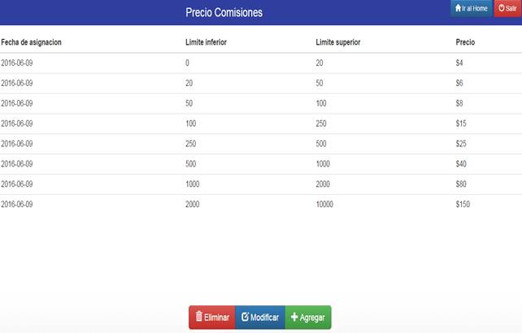
Clickeando en una de ellas y presionando “Modificar” aparecerá la siguiente pantalla, para su modificación.
Para agregar una nueva comisión deberá apretar el botón “Agregar” y visualizará la siguiente pantalla. Al completar los campos requerido y presionando “Aceptar” la nueva comisión estará dada de alta.
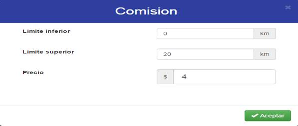
Se cuenta con la opción de generar reportes por viajes.
Utilizando los diferentes filtros usted podrá acceder a reportes en formato PDF, presionando en “Generar reportes”.
Se cuenta con la opción de generar reportes por comisiones.
Utilizando los diferentes filtros usted podrá acceder a reportes en formato PDF, presionando en “Generar reportes”.
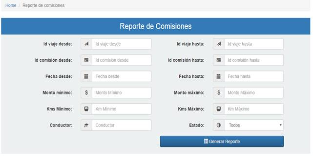
Si es un usuario ya registrado en el sistema, se deberá elegir la opción de la izquierda llamada “Ingresa”, mientras que si es un usuario que nunca se ha registrado, debe ir a la opción “Registrate”.
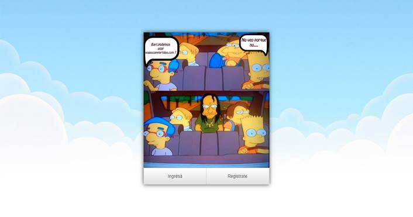
Una vez ingresado en la opción “Registrate”, para crear una cuenta en Viajes Compartidos, es necesaria cierta información obligatoria de la persona siguiendo tres pasos:
Paso 1:
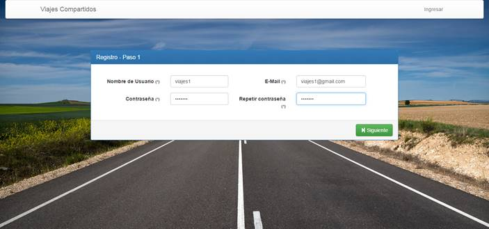
Paso 2:
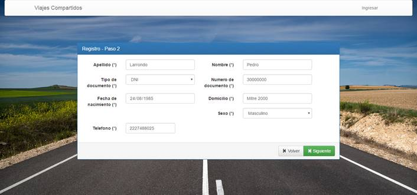
Paso 3:
Las fotos de registro de conducir y foto de perfil son opcionales.
Se deben completar obligatoriamente tanto el usuario como la contraseña, siendo éstos los datos que se utilizaron en el registro hecho previamente. Una vez completados los campos se debe hacer click en el botón verde “Ingresar”.
Luego de esto, se redirige hacia la página principal del sistema.
Una vez en la página principal de Viajes Compartidos se puede realizar la búsqueda de los viajes deseados, mediante los campos Origen (obligatorio), Destino (obligatorio), Fecha desde (obligatorio), Fecha hasta, Conductor o Estado viaje.
Los campos Fecha desde y Fecha hasta serán utilizados para buscar los viajes que están pautados para ese rango de fechas.
Con respecto al Estado de viajes, se podrá filtran por viajes, iniciados o no iniciados.
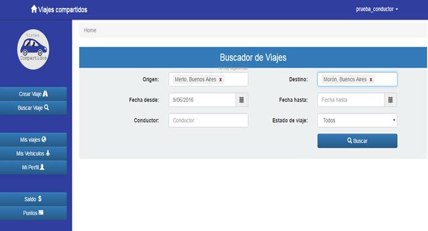
Presionando el botón Buscar, aparecerán todos los resultados, si los hubiera.
Si el usuario anteriormente agregó su vehículo al sistema, puede llevar a cabo la creación de viajes. Caso contrario aparecerá la siguiente pantalla indicando que tener un vehículo es necesario.
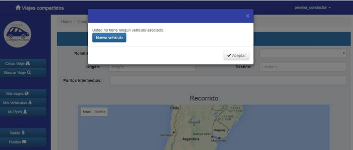
Seleccionando la opción “Nuevo vehículo” se redirigirá a la página que permite agregar un nuevo vehículo asociado al usuario.
Por el contrario, si ya se tiene un vehículo asociado, entonces se permite la creación del viaje completando todos los datos obligatoriamente.
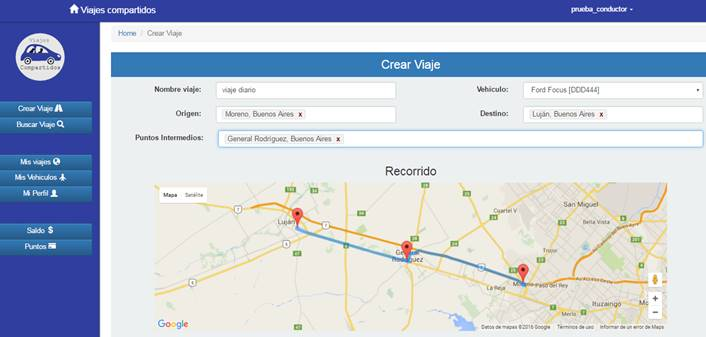
Si se elige como tipo de viaje “Ida y vuelta”, aparecerán las opciones adicionales de fecha, precio estimado total y asientos libres correspondientes a el viaje de vuelta.
Los asientos libres corresponden a los asientos que posee el vehículo para ser utilizados (sin contar el del conductor).
Para poder crear viaje, el usuario deberá contar con saldo suficiente en su cuenta.
Al presionar “Crear” su viaje se habrá creado con éxito.
Se cuenta con una opción de notificaciones ubicada en la sección superior, representada con el ícono de una campana.
Aquí se podrán observar los diferentes eventos que requieren ser notificados.
Por ejemplo la postulación, aceptación y rechazo de un pasajero, inicio cancelación y finalización de un viaje, etc.
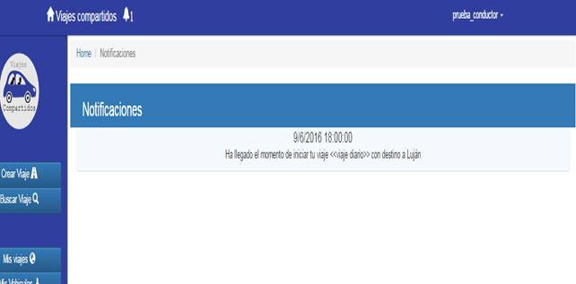
En la sección de “Mis viajes” se tiene un listado de los viajes en los que se participa y los propios creados previamente.
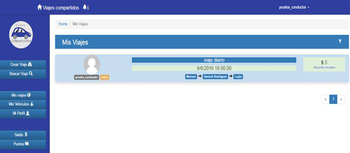
Se cuenta con un filtro, ubicado en la barra titulada “Mis Viajes”, representado con un embudo, para buscar entre los propios viajes. En donde se puede filtrar por Localidad, Conductor, Fecha desde, Fecha hasta, y por un precio mínimo y/o máximo. Luego haciendo click en el botón “Filtrar” se mostrarán los resultados correspondientes si los hubiera.
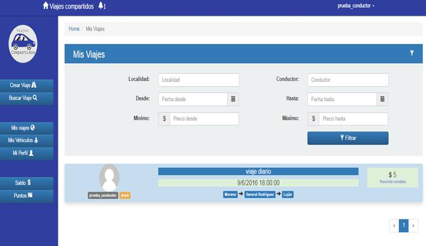
Como vista previa de cada viaje se puede ver la fecha y horario de salida del mismo, así como también el precio de todo el viaje junto con la localidad de subida y la de bajada. Si se hace click en alguno de ellos se redirecciona hacia información más detallada.
Dichos viajes están ordenados por fecha de inicio.
Dentro de esta opción se encuentra toda la información con respecto a un viaje. La primer parte muestra el mapa de viaje indicando punto de origen, destino y los intermedios, si los hubiese. A su vez también muestra el estado del usuario con respecto a ese viaje. En el ejemplo, como es un viaje propio, entonces el usuario es el conductor del mismo y puede modificarlo, si fuera un usuario pasajero, se muestra si está postulado en el viaje, o bien si fue aceptado o rechazado.
Al viaje se lo puede cancelar, modificar y ver si hay postulantes, siempre y cuando el usuario sea el creador del viaje.
Para modificar el viaje es necesario que no haya ni postulantes ni pasajeros aceptados.
También se muestra la información más específica del viaje:
- El estado del viaje puede ser no iniciado (si la fecha de salida no llegó aún), iniciado (cuando llegó el día y hora de salida), finalizado y cancelado.
- Fecha y hora de salida.
- El tipo del viaje puede ser de ida o de vuelta, si así se especificó en su creación.
- El precio estimado que tiene el viaje completo.
- Recorrido del viaje. Se muestra el origen, intermedios (si los hay) y destino.
Siendo el creador del viaje (conductor), aparecerá el botón “Ver Postulantes”, el cual permite ver a los pasajeros interesados en viajar. También aparecerá el botón “Cancelar viaje”, con el cual se puede cancelar el viaje pero, dependiendo de si el viaje tiene o no pasajeros aceptados, se recibirá una sanción o no.
Debajo se muestra la información principal del vehículo junto con la del conductor. Haciendo click en el nombre del conductor se redireccionará a hacia el perfil del mismo para una vista más completa.
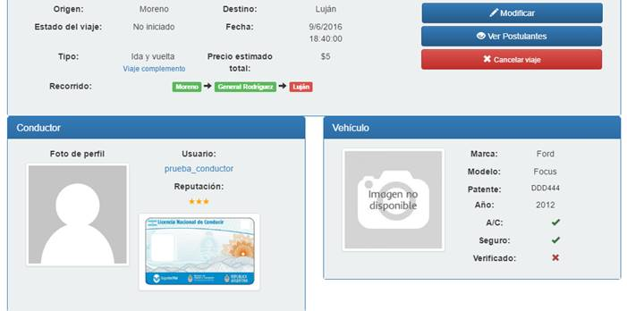
Al final se encuentran los comentarios. Para poder comentar es necesario escribir en la zona de texto y hacer click en el botón “Comentar”. Una vez hecho esto aparecerán los comentarios debajo. Esto será notificado al conductor y, si el conductor comenta, será notificado a todos los usuarios que hayan realizado comentarios.
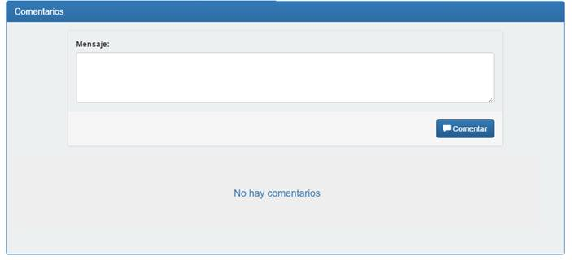
En los pasajeros (es decir usuarios que no son quién ha creado el viaje), aparecerá el botón “Participar” para poder unirse al viaje, y luego el botón “Cancelar Participación” si se quiere cancelar.
Una vez ubicado en el detalle del viaje que desea también se puede realizar un seguimiento del viaje presionando el botón “Seguir”. Con el mismo se tendrá información de un viaje del que no se es participante.
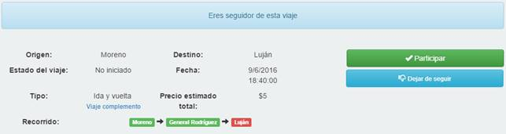
Una vez ubicado en el detalle del viaje que desea, presione el botón “Participar”.
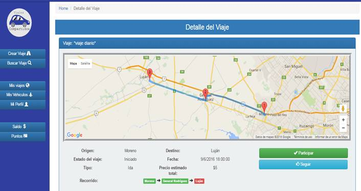
Se pedirá ingresar punto de subida , bajada y asientos a ocupar.
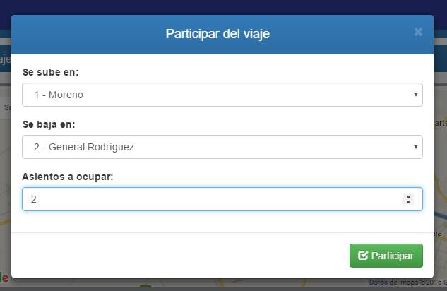
Luego de presionar “Participar”, se muestran los datos del conductor.
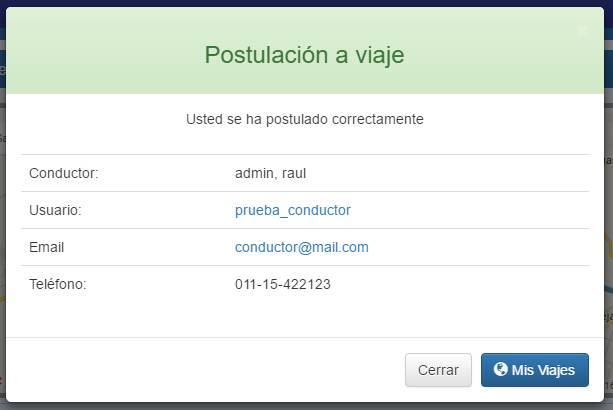
Se tiene la opción de redireccionar a mis viajes, clickeando en el botón “Mis viajes”.
Entrando a la información detallada de un viaje propio y presionando el botón “Ver Postulantes” (el cual aparecerá únicamente si es quien creó viaje) se redirige a la pantalla en la que se muestran los usuarios postulantes. Una vez en ésta se puede aceptar o rechazarlos.
La información que se puede ver del postulante es el nombre de usuario, el apellido, nombres, e-mail, teléfono y las localidades en las localidades de origen y destino.
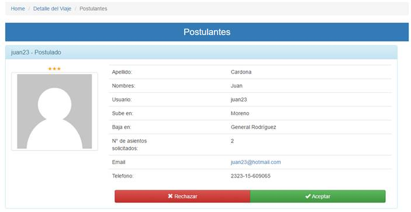
Siendo tanto el creador del viaje (conductor) como el pasajero, aparecerá el botón “Viaje Finalizado” siempre y cuando el viaje haya iniciado, para que los mismos puedan dar por finalizado el viaje. Ambos habilitan el botón de calificar para puntuar a la otra parte. Adicionalmente el botón “Viaje finalizado” del conductor también cambia el estado del viaje a <finalizado>.
Se pedirá confirmación para la finalización del mismo.
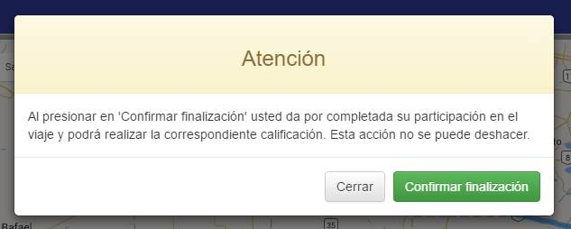
Una vez finalizado el viaje, se clickea en “Calificar”.
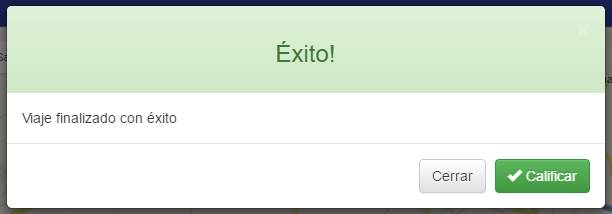
Luego se mostrará la siguiente pantalla, con los usuarios a calificar. Los pasajeros sólo podrán calificar al conductor y el conductor podrá calificar a todos los pasajeros del viaje. Presionar “Aceptar” para enviar la calificación.
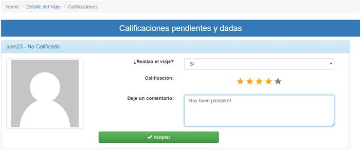
Las calificaciones recibidas también pueden ser observadas en la misma pantalla.
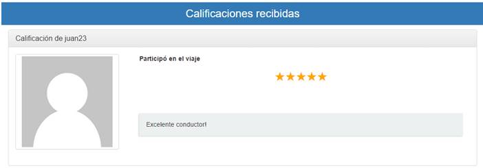
Si no se quiere calificar en ese momento, en el detalle del viaje le aparecerá el siguiente aviso(“Aún no has calificado”).
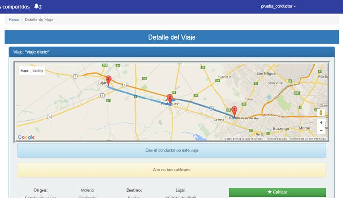
En la sección “Mis vehículos” se muestran los vehículos activos que posee el usuario.
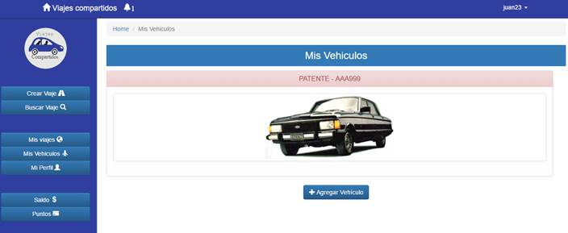
Clickeando en uno de ellos se accede a la información detallada del mismo. El color celeste indica que el vehículo ya está verificado por otro usuario, mientras que el color rosa significa que no lo está.
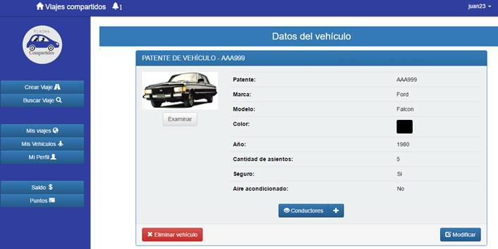
Para agregar un vehículo es necesario completar cierta información sobre éste, como lo es la marca, patente, modelo, color, año, foto, si posee aire acondicionado y seguro, y la cantidad de asientos de dicho vehículo, contabilizando el del conductor.
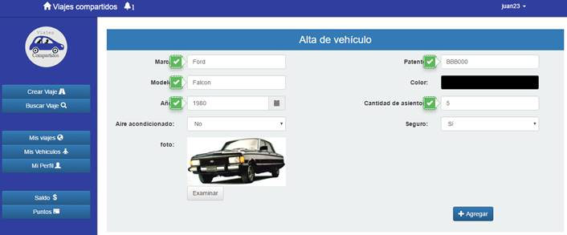
Una vez que se tiene un vehículo, se podrá asociar un nuevo usuario para que conduzca el mismo y puede realizar viajes con él.
Clickeando en uno de mis vehículos, se podrá realizar esta operación. Presionando el botón “+” se mostrará la siguiente pantalla.
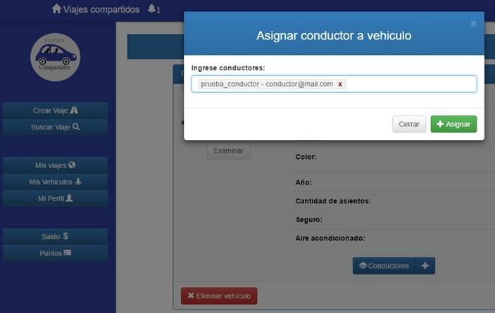
A su vez también se puede desasignar un usuario a un vehículo. Clickeando en “Conductores” aparecerán los usuarios asociados a ese vehículo. Con el botón “-” se realizará la operación de desasignar.
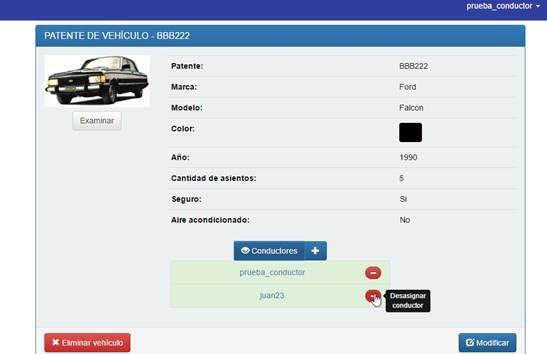
Al ser un vehículo compartido, este no podrá ser usado en dos viajes que están pautados a la misma hora o cercanos.
Si esto ocurre le aparecerá el siguiente cartel.
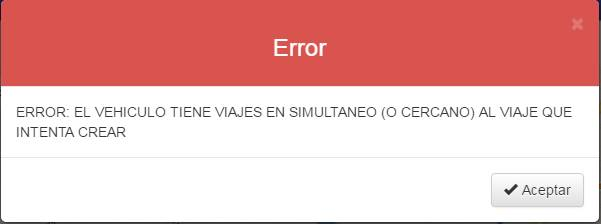
Al presionar “Eliminar vehículo” se observa la siguiente pantalla. Se puede confirmar la operación o cerrarla.
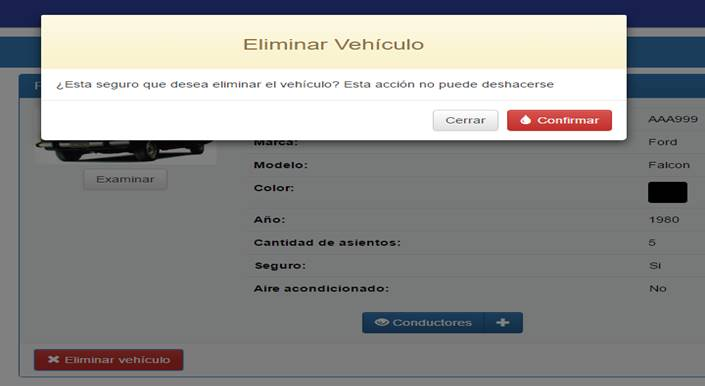
Presionando “Modificar” se pueden modificar los campos permitidos para el cambio del vehículo, guardando los cambios o cancelando la operación. Los campos modificables son el año, cantidad de asientos, seguro y aire acondicionado.
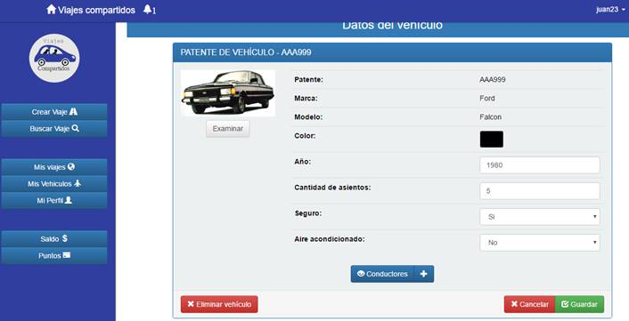
Presionando en el botón “Mi perfil” se observa información del usuario. Desde aquí se podrá también consultar su saldo y sus puntos.
Presionando “Modificar” se pueden modificar los campos permitidos para el cambio del perfil, pudiendo guardar los cambios o cancelar la operación. Estos campos son la contraseña, apellido, nombre, fecha de nacimiento, domicilio, e-mail, teléfono, sexo, y las fotos del registro de perfil y de perfil.
Una vez ubicado en la sección mi perfil, se tendrá un botón “Buscar cliente”, que permitirá buscar otros clientes registrados en el sistema.
Presionando en este botón se observa la siguiente información.
Al presionar “Desactivar cuenta” se observa la siguiente pantalla. Se puede confirmar la operación o cerrarla.
En esta sección el usuario podrá obtener información acerca de su saldo y de los movimientos del mismo. Así como a su vez cargar crédito en su cuenta.
Para ello se debe ingresar el monto y luego presionar el botón “Cargar saldo” y automáticamente se actualizará la cantidad a la derecha de “Saldo actual:”
En esta sección el usuario podrá obtener información acerca de sus puntos y los movimientos de los mismos.
Haciendo click en el nombre del usuario en la esquina superior derecha, aparece la opción “Salir”, que permite al usuario salir del sistema.